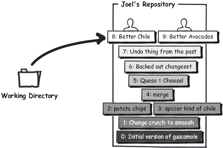
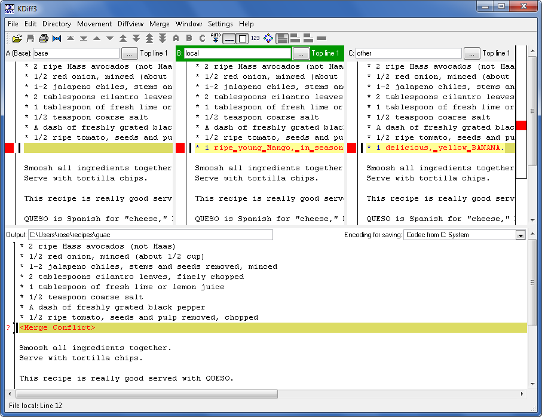
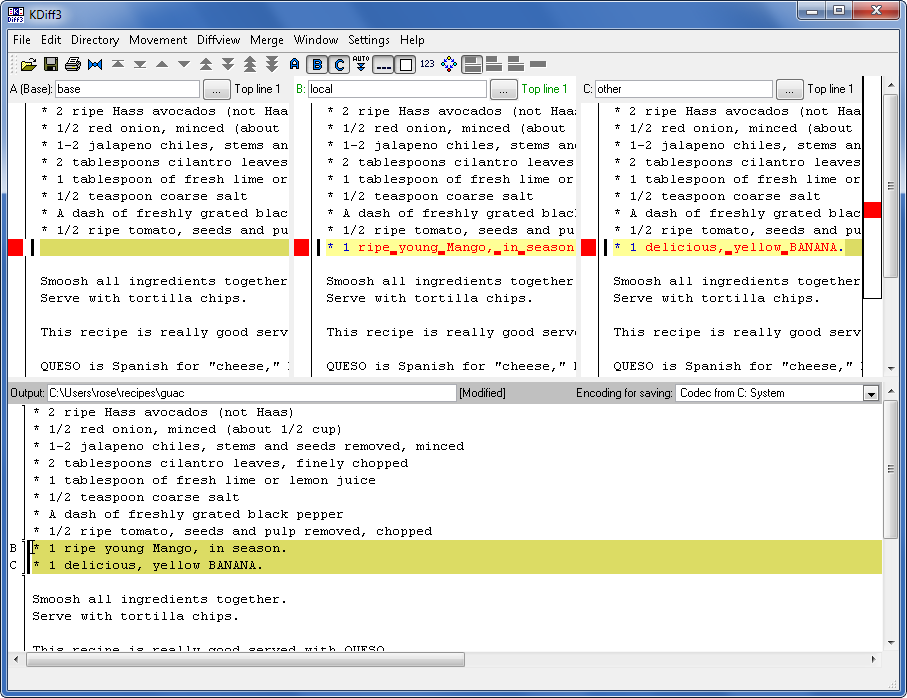

Uma parte importante do controle de versão é coordenar o trabalho de várias pessoas na mesma base de código.
Imagine que Rose e eu ambos queremos fazer alterações na receita de guacamole. A Rose está melhorando a qualidade do abacate. Antes de começar, ela vai puxar todas as últimas atualizações do repositório central para que ela esteja completamente atualizada.
C:\Users\rose\receitas> hg pull pulling from http://joel.example.com:8000/ searching for changes adding changesets adding manifests adding file changes added 2 changesets with 2 changes to 1 files (run 'hg update' to get a working copy) C:\Users\rose\receitas> hg up 1 files updated, 0 files merged, 0 files removed, 0 files unresolved
Agora uma edição:
* 1/2 cebola roxa picada (cerca de 1/2 xícara)
* 1-2 pimentas habanero, sem talo e sem sementes, picadas
…


* 1/2 cebola roxa picada (cerca de 1/2 xícara)
* 1-2 pimentas habanero, sem talo e sem sementes, picadas
…
Ela dá commit e transfere a alteração para o repositório central:
C:\Users\rose\receitas> hg diff diff -r 549d45f24c37 guac --- a/guac Thu Feb 11 17:07:41 2010 -0500 +++ b/guac Thu Feb 11 17:10:40 2010 -0500 @@ -1,4 +1,4 @@ -* 2 abacates maduros +* 2 abacates maduros do tipo Hass (não Haas) * 1/2 cebola roxa picada (cerca de 1/2 xícara) * 1-2 pimentas habanero, sem talo e sem sementes, picadas * 2 colheres de sopa de coentro picado bem fininho C:\Users\rose\receitas> hg com -m "especifica o abacate" C:\Users\rose\receitas> hg push pushing to http://joel.example.com:8000/ searching for changes adding changesets adding manifests adding file changes added 1 changesets with 1 changes to 1 files
Simultaneamente, eu faço uma alteração numa parte diferente do arquivo:
* 1/2 cebola roxa picada (cerca de 1/2 xícara)
* 1-2 pimentas habanero, sem talo e sem sementes, picadas
…
* 1/2 cebola roxa picada (cerca de 1/2 xícara)
* 1-2 pimentas jalapeño, sem talo e sem sementes, picadas
…
Eu consigo dar commit, mas não consigo dar push para o repositório central.
C:\Users\joel\receitas> hg diff diff -r 549d45f24c37 guac --- a/guac Thu Feb 11 17:07:41 2010 -0500 +++ b/guac Thu Feb 11 17:12:09 2010 -0500 @@ -1,6 +1,6 @@ * 2 abacates maduros * 1/2 cebola roxa picada (cerca de 1/2 xícara) -* 1-2 pimentas habanero, sem talo e sem sementes, picadas +* 1-2 pimentas jalapeño, sem talo e sem sementes, picadas * 2 colheres de sopa de coentro picado bem fininho * 1 colher de sopa de suco de limão * 1/2 colher de chá de sal grosso C:\Users\joel\receitas> hg com -m "uma pimenta melhor" C:\Users\joel\receitas> hg push pushing to http://joel.example.com:8000/ searching for changes abort: push creates new remote heads! (did you forget to merge? use push -f to force)
Esta é provavelmente a mensagem de erro mais inútil do Mercurial. Assim é como eu acho que ela deveria ser:
C:\Users\joel\receitas> hg push pushing to http://joel.example.com:8000/ searching for changes ZOMG!!! There are changes in that repo that you don't have yet. Don't push now. Pull the latest changes and merge them first.
Algo como: VISH!!! Esse repositório tem atualizações que você ainda não possui.
Não transfira suas alterações agora. Baixe primeiro estas últimas atualizações do repositório.
E assim, isto era o que eu faria:
C:\Users\joel\receitas> hg pull pulling from http://joel.example.com:8000/ searching for changes adding changesets adding manifests adding file changes added 1 changesets with 1 changes to 1 files (+1 heads) (run 'hg heads' to see heads, 'hg merge' to merge)
Quer saber o que acabou de chegar? O comando hg log -P é uma maneira útil de descobrir.
C:\Users\joel\receitas> hg log -P . changeset: 9:44aefdeef9e0 tag: tip parent: 7:549d45f24c37 user: Rose Hillman <rose@example.com> date: Thu Feb 11 17:10:48 2010 -0500 summary: especifica o abacate
De fato é a alteração que a Rose fez um pouco antes. Como está o meu repositório agora?
C:\Users\joel\receitas> hg heads changeset: 9:44aefdeef9e0 tag: tip parent: 7:549d45f24c37 user: Rose Hillman <rose@example.com> date: Thu Feb 11 17:10:48 2010 -0500 summary: especifica o abacate changeset: 8:bf5854ca20f7 user: Joel Spolsky <joel@joelonsoftware.com> date: Thu Feb 11 17:12:23 2010 -0500 summary: uma pimenta melhor C:\Users\joel\receitas> hg parent changeset: 8:bf5854ca20f7 user: Joel Spolsky <joel@joelonsoftware.com> date: Thu Feb 11 17:12:23 2010 -0500 summary: uma pimenta melhor
Eu tenho “múltiplas cabeças.” Basicamente, o meu repositório agora se parece com isto:
Vê as duas cabeças? Isto aconteceu porque quando a Rose fez as alterações dela, ela estava trabalhando no changeset 7, e quando eu fiz as minhas alterações eu também estava trabalhando neste mesmo changeset 7. Essas alterações precisam ser consolidadas. [NOTA: Nunca use voz passiva!] EU preciso consolidar essas alterações.
C:\Users\joel\receitas> hg merge merging guac 0 files updated, 1 files merged, 0 files removed, 0 files unresolved (branch merge, don't forget to commit)
O comando para isso, hg merge, pega as duas cabeças e as combina. Então ele deixa o resultado no meu diretório de trabalho. Ele não dá commit. Isso é bom porque me dá a oportunidade de conferir se o resultado final da combinação está correto:
C:\Users\joel\receitas> type guac * 2 abacates maduros do tipo Hass (não Haas) * 1/2 cebola roxa picada (cerca de 1/2 xícara) * 1-2 pimentas jalapeño, sem talo e sem sementes, picadas * 2 colheres de sopa de coentro picado bem fininho * 1 colher de sopa de suco de limão * 1/2 colher de chá de sal grosso * Uma pitada de pimenta-do-reino moída na hora * 1/2 tomate maduro, sem pele e sem sementes, picado Amasse todos os ingredientes juntos. Sirva com salgadinhos tipo nachos. Esta receita fica realmente muito boa servida com QUESO. QUESO é a palavra em espanhol para "queijo", mas no supermercado você pode encontrar em fatias quadradas e embaladas de queijo processado e que você pode derreter no micro-ondas com uma pitada de salsa. HUMM!
Parece que está tudo certo; os abacates são do tipo Hass e as pimentas são Japapeño. Então agora eu vou em frente dar commit e transferir tudo para o servidor.
C:\Users\joel\receitas> hg com -m "merge" C:\Users\joel\receitas> hg push pushing to http://joel.example.com:8000/ searching for changes adding changesets adding manifests adding file changes added 2 changesets with 2 changes to 1 files
Eu estou transferindo dois changesets: a minha alteração original da pimenta jalapeño e o resultado do merge, que é seu próprio changeset.
Perceba que as alterações que a Rose e eu fizemos não conflitaram em nada, já que nós trabalhamos em partes diferentes da receita. Então combinar essas duas alterações foi super-fácil. Esta vai ser a situação mais comum, afinal porque na maioria das organizações a cada programador é atribuída uma tarefa distinta para trabalhar em partes diferentes do código.
Mas algumas vezes você pode ter uma organização não tão organizada onde ninguém está disposto a definir claramente quem tem a obrigação de fazer o quê. Isto pode repentinamente causar uma sensação de desânimo muitas vezes inexplicável na equipe de programadores. E isso pode ser difícil de se detectar. Sintomas incluem: programadores se trancando nos banheiros, pausas muito grandes e demoradas para o cafezinho, alta rotatividade, pessoas choroas e cabisbaixas em suas estações de trabalho e zumbidos no ouvido causados trauma do barulho constante de bombas e disparos de rifle na guerra.
MAS, mesmo nas organizações mais bem gerenciadas do mundo, conflitos de merge algumas vezes acontecem. E o Mercurial vai precisa que a pessoa que for executar o merge resolva os conflitos. Vamos ver como é isso.
Primeiramente eu quero que a Rose se atualize logo com minha alteração da pimenta jalapeño:
C:\Users\rose\receitas> hg in comparing with http://joel.example.com:8000/ searching for changes changeset: 9:bf5854ca20f7 parent: 7:549d45f24c37 user: Joel Spolsky <joel@joelonsoftware.com> date: Thu Feb 11 17:12:23 2010 -0500 summary: uma pimenta melhor changeset: 10:8646f8cd7154 tag: tip parent: 9:bf5854ca20f7 parent: 8:44aefdeef9e0 user: Joel Spolsky <joel@joelonsoftware.com> date: Thu Feb 11 21:51:26 2010 -0500 summary: merge C:\Users\rose\receitas> hg pull pulling from http://joel.example.com:8000/ searching for changes adding changesets adding manifests adding file changes added 2 changesets with 2 changes to 1 files (run 'hg update' to get a working copy) C:\Users\rose\receitas> hg up 1 files updated, 0 files merged, 0 files removed, 0 files unresolved
Agora vamos ver o que acontece quando você tem um conflito real: nós dois vamos bagunçar um pouquinho com os ingredientes da receita.
Eu vou adicionar uma banana:
* 1/2 cebola roxa picada (cerca de 1/2 xícara)
* 1-2 pimentas jalapeño, sem talo e sem sementes, picadas
* 2 colheres de sopa de coentro picado bem fininho
* 1 colher de sopa de suco de limão
* 1/2 colher de chá de sal grosso
* Uma pitada de pimenta-do-reino moída na hora
* 1/2 tomate maduro, sem pele e sem sementes, picado
Amasse todos os ingredientes juntos.
Sirva com salgadinhos tipo nachos.
* 1/2 cebola roxa picada (cerca de 1/2 xícara)
* 1-2 pimentas jalapeño, sem talo e sem sementes, picadas
* 2 colheres de sopa de coentro picado bem fininho
* 1 colher de sopa de suco de limão
* 1/2 colher de chá de sal grosso
* Uma pitada de pimenta-do-reino moída na hora
* 1/2 tomate maduro, sem pele e sem sementes, picado
* 1 deliciosa BANANA amarela.
Amasse todos os ingredientes juntos.
Sirva com salgadinhos tipo nachos.
Eu efetivo agora minha alteração que inclui a banana:
C:\Users\joel\receitas> hg diff diff -r 8646f8cd7154 guac --- a/guac Thu Feb 11 21:51:26 2010 -0500 +++ b/guac Thu Feb 11 22:46:27 2010 -0500 @@ -6,6 +6,7 @@ * 1/2 colher de chá de sal grosso * Uma pitada de pimenta-do-reino moída na hora * 1/2 tomate maduro, sem pele e sem sementes, picado +* 1 deliciosa BANANA amarela. Amasse todos os ingredientes juntos. Sirva com salgadinhos tipo nachos. C:\Users\joel\receitas> hg com -m "bananas HUMM" C:\Users\joel\receitas> hg push pushing to http://joel.example.com:8000/ searching for changes adding changesets adding manifests adding file changes added 1 changesets with 1 changes to 1 files
E a Rose, paciência, adicionou uma MANGA. EXATAMENTE NA MESMA LINHA!
* 1/2 cebola roxa picada (cerca de 1/2 xícara)
* 1-2 pimentas jalapeño, sem talo e sem sementes, picadas
* 2 colheres de sopa de coentro picado bem fininho
* 1 colher de sopa de suco de limão
* 1/2 colher de chá de sal grosso
* Uma pitada de pimenta-do-reino moída na hora
* 1/2 tomate maduro, sem pele e sem sementes, picado
Amasse todos os ingredientes juntos.
Sirva com salgadinhos tipo nachos.
* 1/2 cebola roxa picada (cerca de 1/2 xícara)
* 1-2 pimentas jalapeño, sem talo e sem sementes, picadas
* 2 colheres de sopa de coentro picado bem fininho
* 1 colher de sopa de suco de limão
* 1/2 colher de chá de sal grosso
* Uma pitada de pimenta-do-reino moída na hora
* 1/2 tomate maduro, sem pele e sem sementes, picado
* 1 MANGA grande e madura, da estação.
Amasse todos os ingredientes juntos.
Sirva com salgadinhos tipo nachos.
MANGA “grande e madura”, então.
C:\Users\rose\receitas> hg diff diff -r 8646f8cd7154 guac --- a/guac Thu Feb 11 21:51:26 2010 -0500 +++ b/guac Thu Feb 11 22:49:26 2010 -0500 @@ -6,6 +6,7 @@ * 1/2 colher de chá de sal grosso * Uma pitada de pimenta-do-reino moída na hora * 1/2 tomate maduro, sem pele e sem sementes, picado +* 1 MANGA grande e madura, da estação. Amasse todos os ingredientes juntos. Sirva com salgadinhos tipo nachos. C:\Users\rose\receitas> hg com -m "mmmmanga"
Desta vez eu fiz a minha alteração antes da Rose para que ela tenha que fazer o merge. HA-HA!
C:\Users\rose\receitas> hg pull pulling from http://joel.example.com:8000/ searching for changes adding changesets adding manifests adding file changes added 1 changesets with 1 changes to 1 files (+1 heads) (run 'hg heads' to see heads, 'hg merge' to merge) C:\Users\rose\receitas> hg merge
Logo o conflito é detectado e é aberta alguma ferramenta gráfica de resolução de conflitos, com uma interface de usuário bem prosaica, mas que faz basicamente muito bem o que tem que fazer uma vez que você tenha entendido como funciona. Uma ferramenta comum de resolução de conflitos atualmente é o KDiff3, que mostra o seguinte à Rose:
No KDiff3 você vê quatro painéis. O painel superior esquerdo é o arquivo original. O superior central mostra a versão da Rose. O superior direito mostra a minha versão. E o painel inferior é um editor onde a Rose constrói um arquivo combinado com os conflitos resolvidos.
Corrigir conflitos é algo que envolve basicamente passar por cada trecho das alterações e decidir como resolvê-los. A Rose ficou louca e decidiu que uma Guacamode com Banana e Manga não seria tão ruim:
A propósito, eu falei pra vocês que parece que a Rose está namorando? Outro dia ela foi vista saindo do trabalho com um cara parecido com o ator Dennis Franz. E aliás ela tem estado mais bem-humorada atualmente.
A Rose salva as alterações dela e sai do KDiff3.
merging guac 0 files updated, 1 files merged, 0 files removed, 0 files unresolved (branch merge, don't forget to commit) C:\Users\rose\receitas> hg diff diff -r f923c9049234 guac --- a/guac Thu Feb 11 22:49:31 2010 -0500 +++ b/guac Thu Feb 11 23:01:45 2010 -0500 @@ -7,6 +7,7 @@ * Uma pitada de pimenta-do-reino moída na hora * 1/2 tomate maduro, sem pele e sem sementes, picado * 1 MANGA grande e madura, da estação. +* 1 deliciosa BANANA amarela. Amasse todos os ingredientes juntos. Sirva com salgadinhos tipo nachos. C:\Users\rose\receitas> hg com -m "merge" C:\Users\rose\receitas> hg push pushing to http://joel.example.com:8000/ searching for changes adding changesets adding manifests adding file changes added 2 changesets with 2 changes to 1 files
E o conflito está resolvido.
Algo que você deve ter em mente: não é necessário marcar horário com ninguém para para fazer um merge. Qualquer pessoa pode executar um hg pull a qualquer momento, e se você não estiver à vontade para lidar com a resolução de conflitos num momento, você pode continuar trabalhando e executando seus commits tranquilamente, até que você tenha tempo para pensar sobre como executar o merge.
Teste você mesmo
Eis aqui as coisas que você deve saber depois da leitura deste tutorial:
- Trabalhar numa base de código com outras pessoas
- Obter as alterações feitas pelas outras pessoas
- Transferir as suas alterações
- Resolver conflitos de merge que podem ocorrer eventualmente
- Diagnosticar certos tipos de programadores melancólicos
• Um sistema de controle de versão completo baseado no Mercurial e Git
• Ramificação e mesclagem que realmente funcionam
• Hospedagem segura em nossos servidores
• Revisão de código perfeitamente integrada
Quer mais?
A Fog Creek oferece webinários mensais gratuitos que abordam além dos conceitos básicos do Mercurial. Cadastre-se em fogcreek.com.
Perguntas?
Procurando ajuda com o Kiln? Confira a Base de Conhecimentos do Kiln.
Sobre o autor.
Joel Spolsky é o fundador da Fog Creek Software, uma empresa de Nova York que prova que você pode tratar bem seus programadores e ainda assim ser lucrativo. Os programadores têm escritórios particulares, almoço gratuito e trabalham não mais que 40 horas por semana. Os clientes só pagam pelo software se eles gostarem do resultado. A Fog Creek é a criadora do FogBugz, do Kiln e do Fog Creek Copilot. O blog do Joel, Joel on Software, é uma referência para programadores no mundo todo.